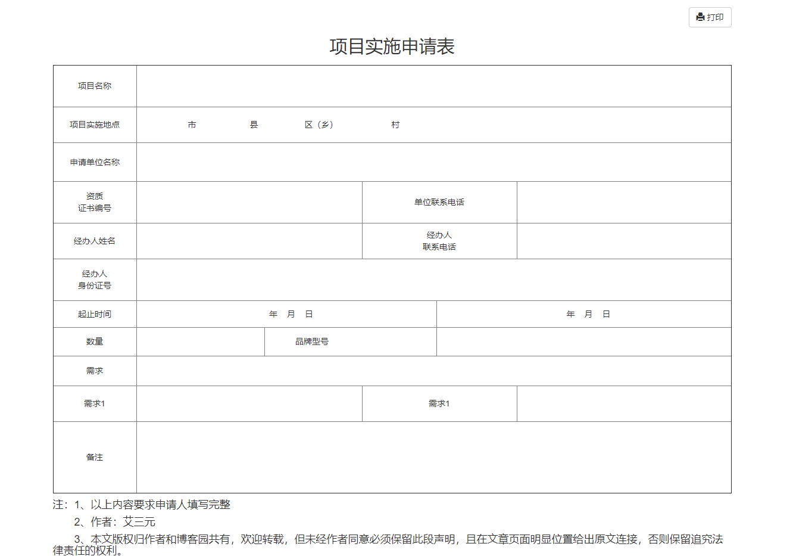
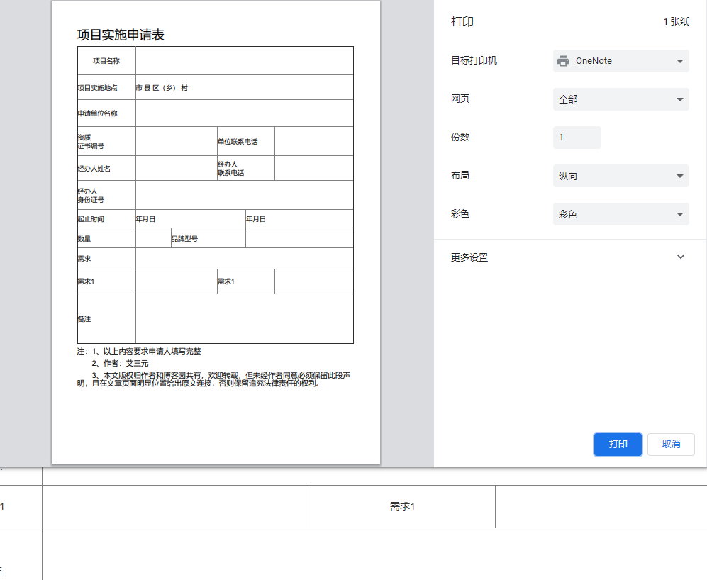

前言：
前一段时间在工作中，遇到需要通过打印实现对报表或者工作流清单等事情时，都需要运用到打印功能，那么 ，这个时候你会怎么处理？
在这里，我们可以通过最简单的方式实现web打印功能，简单易懂，方便快捷
1.在处理工作流项目中，需求中； 2.使用JQprint做为web打印插件
3.兼容：FireFox,Chrome,IE； 4.没有依赖也没有配置，使用简单
申请表为例：

实现方法：
<script src="js/jquery.min.js"></script>
<script src="js/jquery-migrate-1.2.1.min.js"></script>
<script src="js/jquery.jqprint-0.3.js"></script>进行打印：
只需要打印指定的DIV内容：
<script type="text/javascript">
$(function () {
$("#print").click(function () {
$("#container").jqprint(); //指定的内容打印
});
})
</script>属性相关：
$("#container").jqprint({
debug: false, //如果是true则可以显示iframe查看效果（iframe默认高和宽都很小，可以再源码中调大），默认是false
importCSS: true, //true表示引进原来的页面的css，默认是true。（如果是true，先会找$("link[media=print]")，若没有会去找$("link")中的css文件）
printContainer: true, //表示如果原来选择的对象必须被纳入打印（注意：设置为false可能会打破你的CSS规则）。
operaSupport: true//表示如果插件也必须支持歌opera浏览器，在这种情况下，它提供了建立一个临时的打印选项卡。默认是true
});打印效果：

使用的方法很简单，jqprint源码也极其简洁易懂
附加：
jquery print去掉页眉页脚
<style media="print">
@page {
size: auto; /* auto is the initial value */
margin: 0mm; /* this affects the margin in the printer settings */
}
</style>很多朋友遇到 Cannot read property 'opera' of undefined错误问题是juqery版本兼容问题
解决方法：加入迁移辅助插件jquery-migrate-1.0.0.js可解决版本问题
项目源码：web打印